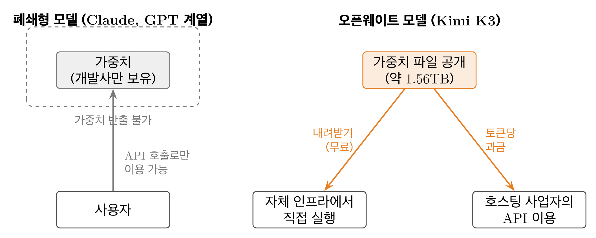

제2의 딥시크? 성격이 다른 충격
2025년 초 딥시크의 등장이 "최상위 AI를 이렇게 싸게 만들 수 있다"는 비용 충격이었다면, 2026년 7월 중국 문샷AI(Moonshot AI)가 공개한 Kimi K3는 다른 종류의 충격입니다. 이번 충격의 본질은 개방입니다. 미국 최상위 모델에 근접한 성능의 초대형 모델을, 누구나 내려받아 쓸 수 있는 형태로 공개해 버린 것입니다.
발표 직후 나스닥이 약 1% 하락하고 반도체주가 매도세를 겪을 만큼 시장의 반응은 즉각적이었습니다. Nature는 학계의 반응을 전하며 "스푸트니크 모멘트라 부르는 사람들도 있다"고 보도했습니다.
오픈웨이트란 무엇인가
핵심 구분은 "모델 가중치를 내려받을 수 있는가"입니다. 폐쇄형 모델은 개발사가 가중치를 비공개로 보유하고 사용자는 API를 통해서만 호출할 수 있습니다. 오픈웨이트 모델은 가중치 파일을 공개하여, 누구나 내려받아 자신의 인프라에서 실행하거나 추가 학습에 사용할 수 있습니다. 단, 오픈웨이트가 오픈소스와 같은 말은 아닙니다 — 학습 데이터와 전체 개발 과정까지 공개되는 것은 아닙니다.

핵심 기술: 계산을 아끼는 세 가지 선택
K3의 새로움은 어떤 하나의 신기술이 아니라, 계산을 아끼는 선택들을 최고 성능급 모델에서 동시에 해냈다는 데 있습니다. 미국의 반도체 수출 규제로 최신 GPU를 마음껏 쓸 수 없는 제약 속에서, 같은 컴퓨팅에서 더 많은 것을 뽑아내는 설계로 답한 것입니다. "결핍이 발명을 낳았다"는 학계의 평가가 나오는 이유입니다.
Stable LatentMoE — 2.8조를 다 쓰지 않는다
모델 내부가 896개의 전문가 모듈로 나뉘어 있고, 토큰 하나를 처리할 때는 가장 적합한 16개만 선택해 계산합니다. 전체 파라미터의 약 1.8%만 활성화되는, 업계에서 가장 낮은 활성 비율입니다. 총 파라미터는 지식의 양, 활성 파라미터는 응답 한 번의 비용에 가깝습니다.
Kimi Delta Attention — 긴 입력을 싸게 처리한다
기존 어텐션은 입력이 10배 길어지면 계산량이 100배로 불어납니다. K3는 계산량이 입력 길이에 정비례하는 선형 어텐션(KDA)을 전체 층의 3/4에 적용해, 100만 토큰의 긴 문맥을 비교적 낮은 비용으로 제공합니다. 프런티어급 모델에서 선형 어텐션이 품질 저하 없이 통한다는 것을 처음 보여준 사례입니다.
MXFP4 — 처음부터 4비트로 학습한다
대부분의 모델은 높은 정밀도로 학습을 마친 뒤 배포 직전에 압축(양자화)해 품질 손실이 생깁니다. K3는 학습 단계부터 4비트를 전제하고 훈련해 배포 시점의 품질 손실이 적고, 메모리가 작은 하드웨어에서 돌리기도 쉽습니다.


성능: "넘어섰다"는 이르지만 "경쟁권 진입"은 사실
Artificial Analysis 지능 지수에서 K3는 57점으로 전체 3위입니다. 1위 Claude Fable 5(60점), 2위 GPT-5.6 Sol(59점)보다 낮지만, Claude Opus 4.8(56점)과 GPT-5.5를 앞섭니다. 오픈웨이트 모델이 이 위치에 오른 것은 처음입니다.
다만 해석에는 주의가 필요합니다. 개발사가 공개한 시연 사례(24시간 자율 코드 최적화, 48시간 소형 AI 칩 설계 등)는 선별된 것이고, 출력 속도는 초당 40토큰대로 느린 편이며, 개발사 스스로 사용자 경험에서는 최상위 폐쇄형 모델과 격차가 있다고 인정합니다. 요컨대 "미국 AI를 넘어섰다"는 단정은 이르지만, "공개 모델이 최상위 경쟁권에 진입했다"는 사실은 복수의 독립 평가로 뒷받침됩니다.
'무료로 쓸 수 있다'는 착각: 자체 운영의 벽
가중치가 공개되어도 자체 운영은 만만치 않습니다. K3의 가중치 파일은 가장 압축된 4비트 형식으로도 약 1.56TB — NVIDIA의 최신 8-GPU 서버 DGX B200 한 대에도 들어가지 않는 크기입니다. 문샷AI는 효율적 구동을 위해 64개 이상의 가속기로 구성된 슈퍼노드 환경을 권장합니다.
| GPU 구성 | 메모리 합계 | 구동 가능 여부 | 시간당 요금 |
|---|---|---|---|
| H100 × 8 | 0.64 TB | 불가 | $42 (약 5.8만 원) |
| H200 × 8 | 1.13 TB | 불가 | $55 (약 7.7만 원) |
| B200 × 8 | 1.44 TB | 사실상 불가 | $99 (약 13.9만 원) |
| B300 × 8 | 2.30 TB | 최소 구동 | $112 (약 15.7만 원) |
| B300 × 64 | 18.4 TB | 권장 구성 | $899 (약 126만 원) |
2026년 7월 기준 주요 클라우드 사업자의 GPU당 온디맨드 단가, 환율 1,400원/달러. 장기 약정 시 단가는 30~60% 낮아진다.
시간당 126만 원이라는 권장 구성 요금이 말해주듯, 대다수 기업에게 현실적인 경로는 직접 운영이 아니라 클라우드나 전문 추론 사업자가 호스팅한 K3를 토큰 단위로 사서 쓰는 것입니다.
무료 모델을 돈 내고 쓰는 역설
오해를 피하면: 가중치를 내려받아 자체 인프라에서 돌리면 문샷AI에 낼 돈은 전혀 없습니다. 토큰당 과금은 문샷AI가 호스팅한 K3를 API로 쓸 경우의 이용료입니다. 그 단가는 동일 작업량 기준 GPT-5.6 Sol의 약 절반, Claude Fable 5의 약 3분의 1 수준입니다.
다만 단가가 싸다고 최종 비용도 싼 것은 아닙니다. K3는 내부적으로 긴 풀이 과정을 거치며 이 풀이도 토큰으로 과금되므로, 같은 질문에 경쟁 모델보다 더 많은 토큰을 씁니다. 도입 검토 시에는 토큰 단가가 아니라 작업 하나를 끝내는 데 드는 총소유비용(TCO)으로 비교해야 합니다. Artificial Analysis 측정에서 K3의 과제당 비용($0.95)은 단가가 두 배 가까이 비싼 GPT-5.6 Sol($1.04)과 거의 차이가 없었습니다.
두 표를 겹쳐 보면 — 오픈웨이트가 좋아질수록 커지는 시장
모델은 무료지만 실행은 무료가 아닙니다. 오픈웨이트 모델의 가치가 커질수록 그 가치를 현금화하는 지점은 모델 판매가 아니라 GPU 인프라, 호스팅, 운영으로 이동합니다. 성능이 올라갈수록 인프라 장벽도 올라가고(K3는 최신 288GB급 GPU를 요구하는 첫 오픈 모델), 이를 대규모로 보유·운영할 수 있는 주체는 클라우드 사업자뿐입니다.
자체 호스팅의 고정비와 토큰당 과금 사이의 간극에서 전문 사업자의 사업 공간이 생기고, 자기 워크로드가 API와 자체 호스팅의 손익분기 교차점 어느 쪽에 있는지 계산하는 것이 모든 도입 기업의 숙제가 됩니다.
성능이 다소 낮아도 오픈웨이트가 선택되는 자리
실무의 질문은 "어느 모델이 가장 똑똑한가"가 아니라 "이 작업에 충분히 좋으면서 제약 조건을 만족하는 모델이 무엇인가"입니다. 오픈웨이트가 구조적으로 유리한 자리는 분명히 존재합니다.
데이터가 밖으로 나갈 수 없는 워크로드
의료 기록, 금융 거래, 국방·공공 기밀처럼 외부 API 전송이 불가능한 영역에서는 "자체 인프라에서 돌릴 수 있는가"가 1차 관문이며, 오픈웨이트는 이 관문을 통과하는 사실상 유일한 선택지입니다.
대량·반복 작업의 비용 최적화
문서 분류·요약·데이터 추출처럼 건당 난이도는 낮지만 물량이 큰 작업에 최상위 모델은 과잉 투자입니다. "충분히 좋은" 오픈웨이트로 단위 비용을 낮추는 것이 총비용 관점에서 합리적입니다.
미세조정이 성능 격차를 뒤집는 영역
법률 문서, 사내 코드베이스, 산업 용어 같은 특정 도메인에서는 해당 데이터로 미세조정한 오픈웨이트 모델이 범용 최상위 모델보다 나은 결과를 내기도 합니다. 가중치 접근이 가능해야만 열리는 옵션입니다.
계층화 구조와 벤더 리스크 헤지
요청의 다수를 저비용 오픈웨이트가 처리하고 어려운 소수만 폐쇄형 최상위 모델로 올리는 계층 구조는 품질과 비용을 동시에 잡는 실전 패턴입니다. 단일 벤더 의존 리스크에 대한 보험이기도 합니다.
결론: 경쟁의 축이 모델에서 생태계로
K3가 던지는 더 큰 질문은 기술이 아니라 산업 구조에 관한 것입니다. 최상위권 성능의 모델이 공개된 형태로, 폐쇄형 대비 낮은 단가로 시장에 들어오면서, 경쟁의 축이 모델 성능 단독에서 누가 더 많은 기업과 개발자가 선택하고 운영할 수 있는 환경을 제공하는가로 넓어지고 있습니다. 모델이 공개될수록 가치는 모델 판매에서 인프라, 호스팅, 운영으로 이동합니다. 오픈웨이트가 좋아질수록 커지는 것은 모델 시장이 아니라 컴퓨팅 시장입니다.
Kimi K3는 "중국이 미국을 이겼다"는 이야기가 아닙니다. AI를 도입하려는 기업에게 선택지가 늘어났다는 뜻이고, 동시에 자기 워크로드에 맞는 선택의 기준을 스스로 세워야 한다는 뜻입니다.